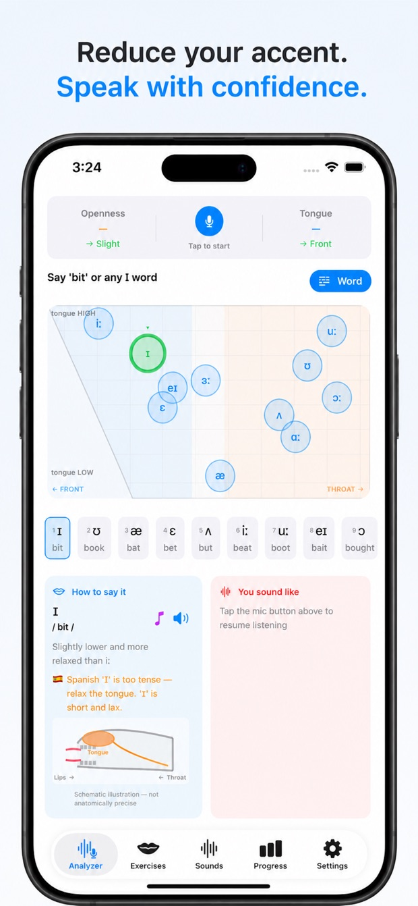
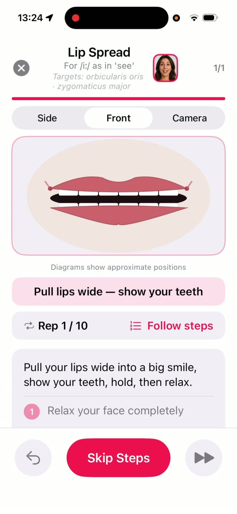
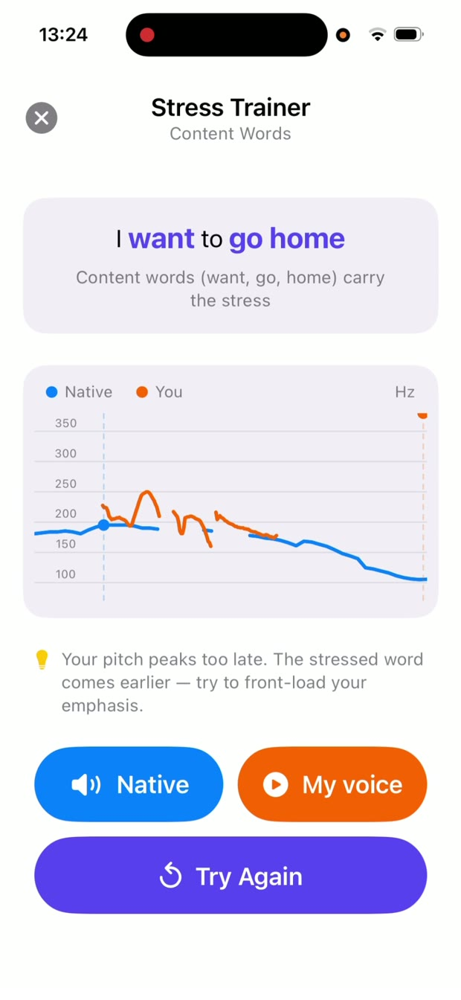

Sound Native Accent Reduction vs ELSA Speak vs BoldVoice — Which Accent App Is Best?
Most pronunciation apps tell you whether you got a sound right or wrong. Sound Native Accent Reduction goes further: it shows you what is happening in your mouth, why a sound is difficult, and how to produce it correctly.
Instead of relying on a single pronunciation score, Sound Native combines acoustic analysis, visual feedback, articulation training and adaptive practice to help you master American English pronunciation.
It doesn't just train your ear. It trains your mouth, too.
What makes Sound Native different?
1. See your vowels in real time Free

The Vowel Analyzer turns pronunciation into something you can see. It captures your voice in real time and plots your vowels on an F1 × F2 acoustic chart, the same kind of vowel space phoneticians and speech researchers use, next to native-speaker targets.
- F1 reflects vowel height, which is closely related to how open your jaw is.
- F2 reflects how far forward or back your tongue is.
For example, if your short "i" in "ship" sounds too much like the long "ee" in "sheep", the chart shows the difference. You can watch your vowel move toward the target as you adjust your tongue and jaw.
Why this matters: you don't have to guess what sounds different. The difference becomes visible, with a measurable target to aim at.
2. Train the muscles behind your pronunciation Free

Pronunciation isn't only about hearing sounds correctly. It's about building the physical movements that produce them. Sound Native includes 30 guided mouth exercises with animated diagrams for the lips, tongue and jaw. Each one shows which muscles are involved and which English sounds it helps, for example:
- Lip rounding for words like "food"
- Jaw drops for open vowels like "father" and "cat"
- Tongue placement for the American R
- The quick tongue tap in the American pronunciation of "water"
Exercises name the muscles you're working, such as the orbicularis oris (lips) and the masseter (jaw), so you understand the mechanics behind each sound.
Why this matters: your first language has shaped your speech movements over many years. Targeted physical practice builds new habits faster than repetition alone.
3. Develop the ear to recognize every sound Free
Accurate pronunciation starts with accurate perception. Listening tests, an Ear Training Quiz and minimal-pair practice help you tell apart sounds that non-native speakers often confuse, such as ship / sheep and right / light. The Accent Diagnostic finds your weakest sounds so you know where to start.
Why this matters: you need to recognize a sound before you can reliably reproduce it. Sound Native builds both skills together.
4. Practice that adapts to your progress
Smart Queue tracks your accuracy across drills and moves any sound that's been below 70% recently into a Priority list, so your next session focuses on what needs the most work. For beginners, a 28-lesson guided path gives a clear order through the fundamentals.
Why this matters: every session has a purpose. You spend less time on what you already know and more on the sounds that need it.
5. Guidance for your native language
Different languages create different pronunciation challenges. Sound Native includes targeted tips for Russian, Spanish and Mandarin speakers, highlighting habits that tend to carry over into English. Choose "Other" for general guidance.
Why this matters: pronunciation isn't one-size-fits-all. Knowing how your native language shapes your English helps you focus on the differences that matter most.
6. Master the details of American English
Beyond individual sounds, Sound Native has more than 25 pronunciation drills:
Stress & intonation

See your pitch curve alongside a native speaker's, match pitch peaks to stressed syllables, and practice word-stress pairs like PREsent vs preSENT.
Connected speech & schwa
Learn how Americans link words, reduce unstressed syllables, flap the T in "water", and say "gonna" and "wanna".
Word endings & consonant clusters
Understand why the final S sounds different in "cats" and "dogs", how the -ed ending changes, and how to say clusters like "street" and "asked" without adding extra vowels.
Vowels & consonants
Practice commonly confused pairs, TH and the American R with live detection.
Real speaking practice
Build fluency with Shadowing, Reading Aloud, Tongue Twisters and Practice Any Word.
These drills are part of Pro, and one Pro drill is free every day.
7. Measure your progress Free
Sound Native doesn't just tell you how today's attempt went. The Progress screen tracks your results over weeks, so you can see whether practice is working:
- Accuracy for every vowel: see, for example, whether you're telling /ɪ/ ("ship") and /iː/ ("sheep") apart more often this week than last, and tap any sound for its trend.
- A 30-day vowel map: where your vowels have landed over the past month, colored by accuracy, so you can spot which ones are still off target.
- R vs L and other consonant pairs over the last 14 days.
- Your own recordings, saved so you can compare how you sound now with how you sounded a few weeks ago.
- Streaks, Challenge scores and a 28-day practice calendar to keep you consistent.
Why this matters: progress in pronunciation is slow and hard to hear in yourself. Numbers and before-and-after recordings show you it's happening.
Sound Native vs ELSA Speak vs BoldVoice
| Sound Native | ELSA Speak | BoldVoice | |
|---|---|---|---|
| Main approach | Acoustic vowel analysis and articulation training | AI pronunciation scoring and speech analysis, AI conversations, fluency feedback and personalized learning paths | Video coaching and AI feedback |
| Live F1 × F2 vowel chart | Yes | Not its focus | Not its focus |
| Guided mouth exercises | 30, with animated diagrams | Not its focus | Taught in video lessons |
| Free access | Extensive free toolkit | Limited free lessons | 7-day trial |
| Monthly price | $2.99 | Varies by plan and offer (about $12–22) | About $25 |
| Yearly price | $14.99 | Varies by plan and offer (about $100–160) | $149.99 |
| One-time purchase | $29.99 | Sometimes offered | Not available |
| Your audio | Processed on your phone, never uploaded | See their privacy policy | See their privacy policy |
Prices checked November 2026, in US dollars. Sound Native: US App Store. BoldVoice yearly: BoldVoice's sign-up page; monthly: third-party listings. ELSA Speak: third-party listings; ELSA's prices vary widely by plan, region and promotion. Check each app's store listing for current pricing.
Free to start
You get a substantial pronunciation toolkit for free:
- Real-time Vowel Analyzer
- All 30 mouth exercises
- Accent Diagnostic
- Listening tests and Ear Training Quiz
- Phoneme Chart and the vowel Challenge game
- Smart Queue
- One Pro drill free every day
The free version shows ads. Pro removes them and unlocks every drill for $2.99 a month, $14.99 a year, or $29.99 once. A whole year of Pro costs less than a single month of some competing apps.
Which accent reduction app should you choose?
These apps aren't really cheaper or pricier versions of each other. They take three different approaches:
- ELSA Speak: AI-powered pronunciation and speaking feedback.
- BoldVoice: video-based accent coaching with AI feedback.
- Sound Native: acoustic visualization, phonetics and physical articulation training.
So the right choice depends on how you learn and what you want to improve:
- Sound Native: best for visual vowel analysis, articulation training, IPA-based learning and understanding the mechanics of American English.
- BoldVoice: best if you prefer video lessons and accent coaching.
- ELSA Speak: best for an all-round AI coach: pronunciation and fluency feedback, AI conversation practice and a personalized learning path.
- Speakometer: worth considering for British English.
- Speechling: a good option if you want feedback from a human coach.
Sound Native specializes in American English. Its standout feature is real-time visual vowel feedback combined with hands-on articulation training.
Who is Sound Native for?
Sound Native is built for learners who want to understand pronunciation, not just receive a score. It's especially useful for:
- Visual learners who want to see how their vowels differ from native-speaker targets
- Analytical learners who want the phonetics and mechanics behind English pronunciation
- Independent learners who want clear explanations of tongue, lip and jaw position
- Non-native speakers stuck on specific sounds who need more than generic feedback
- Budget-conscious learners who want powerful tools without an expensive monthly bill
A different way to learn American English pronunciation
Most apps give you a pronunciation score. Sound Native helps you understand the science behind the sound.
Ready to see your pronunciation?
Try Sound Native Accent Reduction for free. Explore your vowels on the live chart, train your tongue, lips and jaw, and find out exactly which sounds need work.
Stop guessing what is wrong with your pronunciation. See the sound, understand the movement, and train the muscles that produce it.

Free to start · Pro from $2.99/month